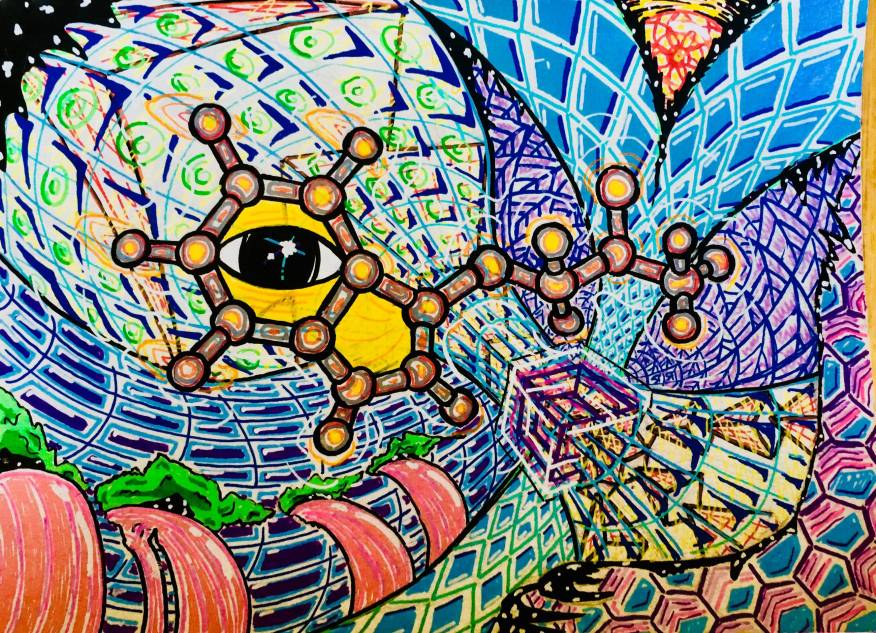
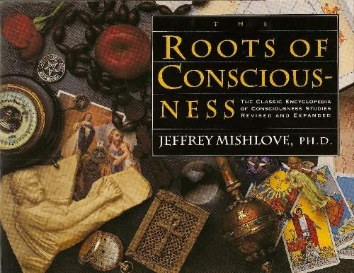
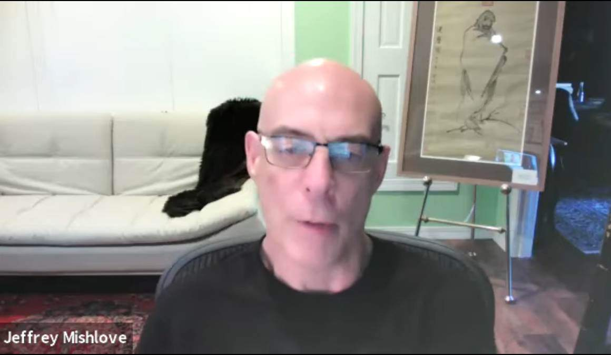

Jeffrey Mishlove の「意識は超空間に存在している」という主張の誤謬

(image source : https://i.redd.it/fdtaq2fr39s41.jpg)
原題：Jeffrey Mishlove の仮説 : 意識は超空間に存在している。
前置き
- Jeffrey Mishlove が遠隔インタビューでタイトルのような彼の仮説を述べている。手抜き
- 43:55 - (a) 人類が宇宙に進出するためには超空間（hyper-space）を自在に操る能力が必要。 - (b) 超空間を自在に操るためには、意識の本質を理解しなくてはならない。 - (c) 私は著書の "the roots of consciousness"（*1） でも述べたが、「意識は実際に超空間に存在している」という仮説を提唱している。（*1）
 The Roots of Consciousness: The Classic Encyclopedia of Consciousness Studies Paperback - Illustrated, October 1, 1995 by Jeffrey Mishlove (Author), Saul-Paul Sirag (Contributor)コメント1
- Jeffrey Mishlove はこのインタビューの中で、彼のなしたマス・メディアでの超心理学普及の経緯を詳しく語っている。他ではあまり言及されない事柄なので貴重な証言。彼のこの貢献は称賛に値する。コメント2
- 背景の絵画が彼の東洋思想かぶれを示唆している。  - Jeffrey Mishlove が SRI で研究仲間だった Russell Targ （遠隔視研究者）もその点では似ている。たとえば下の発言 Russel Targ : 「量子もつれ」が梵我一如、般若波羅蜜多の科学的裏付けだ。 (2021-01-10) - ただ、彼らの研究仲間だった Hal Puthoff は例外。 Hal Puthoff の東洋思想にカブレた発言は聞いたことがない。コメント3
- 彼の (b) 超空間を自在に操るためには、意識の本質を理解しなくてはならない。 という主張は「意識は実際に超空間に存在している」という彼の仮説に由来しているが、この仮説の同調者は政府関係者の間にも少なくないようで、・(b) Ben Rich の死去する 2年前の発言（テレパシーと UFO の関連を示唆）、 ・(c) Dr. Eric Walker（カナダ政府の防衛に深く関与）のテレパシー発言 ref: Grant Cameron : 米政府は 1950年に UFO と意識の深い関係に気づいた。Roswell で捕獲した ET がその発端だ。（全体） (2021-08-19)で取り上げた Ben Rich や Eric Walker も同様の仮説を抱いていた気配がある。コメント4
- 魂（＝現代的に言えば意識）は我々の住んでいるこの 3次元空間の内部にあるのではなく、それを超越した精妙な領域（＝現代的に言えば超空間や高次元空間）に実在しているのだ…そういった発想は新しいものではなく、大昔からごく普通のものだった。近代科学の興隆によってそれが一時的に静まっていたが、20世紀末からの精神世界ブームによってそれが再び盛んになってきただけ。 - 意識の本拠地が超空間だから、意識はこの時空間の制約を受けないのだ、実際に千里眼や予知、テレパシー、臨死体験などがその証拠となっている…と Jeffrey Mishlove らは主張する。意識は死後も存続することを保証する説であり、一見するともっともらしいので精神世界ファンが大いに満足するする仮説に仕上がっている。 - よくできた仮説だが、惜しむらくは致命的な困難を抱えている。たとえば… ・意識の本拠地が超空間なら、意識は取り囲む超空間を知悉している筈。ところが我々は超空間について何も知らず何も理解していない。知的理解どころか直観的認識すら持っていない。屋根裏部屋の住人なら、屋根裏部屋を知悉しているように、超空間を知悉している筈。 ・意識の本拠地が超空間なら、この 3次元空間に制約された貧弱な五感は不要となる。超空間から 3次元空間のあらゆる場所を同時に俯瞰できるのに、なぜ肉眼が無いと見えないのか？ - これに対して伝統的に次のような弁明がなされてきた。曰く…。意識の本拠地は超空間だが、今は一時的な滞在先に過ぎないこの地上の肉体という名の 3次元空間の檻に閉じ込められているから本拠地にアクセスできないのだ…と。 - これを、今風に喩えると… ・インターネットのサーバー：超空間にある本源的意識 ・手元の高性能携帯電話機（smart-phone）：肉体に閉じ込められた個我意識 となる。ネットの通信がほぼ途絶状態なので、この個我意識は本源的意識にほとんどアクセスできないが、稀に神秘体験や DMT 摂取、臨死体験などで、一時的に霊的通信が回復するのだ…と。 - 要は、大文字で始まる Consciousness（本源的意識）と小文字で始まる consciousness（個我意識）の使い分けで問題を回避しようという弁明方法。 - だが、この手の弁明を認めると大きな問題が生じる。それは、この私（＝肉体に閉じ込められた個我意識）が無価値化すること。本源的意識の価値が無限に高まる一方で、個我意識の価値が無へと転落する。 - 超空間の本源的意識の存在を大前提にするがゆえに、Grant Cameron らの精神世界信者は「全てはひとつ、悪は存在しない、どんな悲惨な経験にも至上の価値がある」と主張するに至る。 - さらに精神世界信者は気づいていないが、この手の弁明を認めると、個我意識が死によって存続が途絶えることも認めざるを得なくなる（分離した個我意識は妄想に過ぎず実在しない、実在するのはひとつの本源意識のみ…とまで彼らは主張しだす）。結果、存続するのは超空間にある本源的意識だけとなる。だが、その超空間にある本源的意識なるものは個我意識がすがる虚構でしかない。神の虚構と同じ構図。神の価値が無限に高まる一方で、地上の現実世界や個々人の価値が無へと転落する。 - 実際のところは…。超空間だの本源的意識だのを想定せずとも、個我意識の未知の非日常的機能として千里眼や予知、テレパシー、臨死体験などは説明しうる。本源的であろうが、個我であろうが、どちらも意識というくくりにまとめられるのであれば、当然のこと。片方の意識にだけ可能だ…というのでは無理がある。不可解な現象の説明に未知の超空間だの本源的意識だのを持ち出すのはまだまだ早すぎる。 - 要するに、Jeffrey Mishlove の唱える仮説は「天に神がまします」を今風に「意識は超空間に存在する」と言い換えているだけで実質的には古代人の発想と変わらない。 - 時空間を自在に操れる筈の本源的意識が、なぜこの地上の肉体という檻に閉じ込められた個我を放置しているのか？ これは「なぜ神は地上の悲惨を放置するのか？」と同じ疑問で信者のだれもまともに答えられない。信者でない私には簡単に答えられる。本源的意識も神も実在しないからだ…と。音声書写（自動生成）
▼展開
43:51 let me propose a hypothesis 43:55 and and that is that 43:58 in order to become a space-faring 44:02 civilization 44:05 you have to be able to master hyperspace 44:10 in order to master hyperspace you have 44:13 to understand the nature of 44:15 consciousness 44:17 and because 44:19 i i'm going to postulate uh and there's 44:23 good evidence and 44:25 many publications including my own book 44:27 the roots of consciousness that suggests 44:30 that consciousness actually resides in 44:32 hyperspace 44:34 and uh in hyperspace there are other 44:37 realities you can think of hyperspace as 44:40 the world within that we all have access 44:43 to that world within ourselves it's the 44:46 world of dreams it's the world of the 44:49 afterlife and it's a world in which 44:52 space-faring civilizations 44:55 are uh 44:58 adept 44:59 and we see this because uh in many of 45:02 the ufo 45:04 encounter situations particularly those 45:07 reported by whitley strieber but 45:09 certainly not limited to whitley 45:12 you have instances in which 45:15 deceased people appear alongside of 45:18 extraterrestrials 45:21 that is there so there's some sort of 45:23 commerce you could say of some kind 45:26 taking place between the reality of 45:29 extraterrestrial entities and the 45:31 reality of disembodied humans 45:35 and until we're able to master 45:38 that 45:39 level of reality and we're very far from 45:42 it as a civilization now we're not ready 45:45 to join 45:46 the um 45:48 galactic federation or the community of 45:51 space-faring civilizations we're not yet 45:54 developed enough or mature enough so 45:57 it's going to require 45:59 not only 46:00 the 46:02 mathematical and technological 46:04 development it's going to require as 46:07 well 46:08 a level of spiritual development which 46:11 many individuals have achieved but as a 46:14 civilization we're very far from that 46:17 and the fact that 40 years after i got 46:20 my doctoral degree in parapsychology not 46:23 a single 46:25 additional one has ever been issued in 46:28 the united states is just one little 46:32 sign of how far we have yet to go動画（1:00:08）
Jeffrey Mishlove - New Thinking Allowed (ETP 020) (2021-09-21)
初出
Jeffrey Mishlove の仮説 : 意識は超空間に存在している。 (2021-09-22)
この記事の完了度: